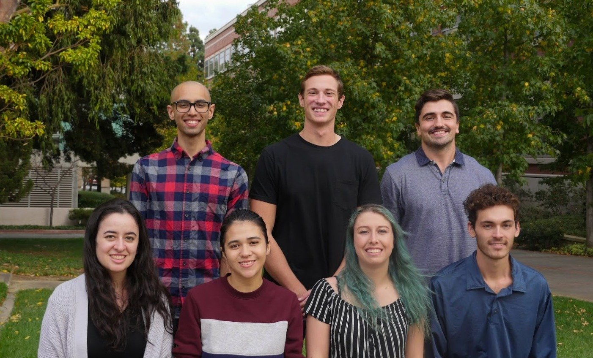
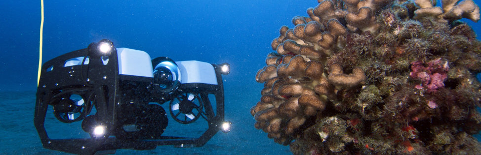

Who We Are
We are the 2019-2020 UCLA Ocean Undergraduate Research Team. With the help of the Bay Foundation and UCLA's Institute of the Environment and Sustainability, we will continue researching how to save our oceans and Santa Monica coastal communities from climate change!

Our Goals
By building upon years of research provided by past practicum teams, as well as affiliates of The Bay Foundation, our team hopes to fill knowledge gaps that hamper the understanding of seagrass habitats in the Santa Monica Bay (SMB). By utilizing tools at our disposal, such as Underwater Remotely Operated Vehicles (UROVs) and a variety of other instruments we hope to understand the biochemical and spatial profiles of seagrass meadows along the shores of Catalina Island. Using a variety of methods such as sonar and field sampling we hope to be able to bolster geographic maps of the seagrass meadows themselves, as well as better understand how they may change the chemistry of the ocean around them in the face of rising ocean acidification. With time, these profiles should help the Bay Foundation better understand the seagrass meadows of the SMB and inform future restoration plans.

The Team
Mateen Hassan
Writing & Research Development
Hailing from Los Angeles County, Mateen’s love of the outdoors developed from the pockets of nature interspersed throughout the Greater Los Angeles area. Pursuing a B.S. in Environmental Science with a concentration in Environmental Health, he aims to apply his eclectic skill set and knowledge to achieve the goals of the project. In his spare time, Mateen loves to discover new music as he partakes in outdoor activities such as hiking.
Rachel Bressler
Equipment Expert
Rachel was born and raised in Orange County, CA. Her love for the outdoors started with family road trips to Sequoia National Park, Joshua Tree, and various other nature reserves, which ultimately influenced her field of study. She is currently pursuing a B.S. in Environmental Science with a concentration in Environmental Engineering. In her free time, Rachel enjoys dancing, trying out new recipes, and visiting museums.
Carter Webb
Communications / GIS
Originally from Colorado, Carter has been striving to get to the coast most of his life. As an avid diver and photographer he realized how much needed to be done to save our oceans. Pursuing a B.S. in Environmental Science, with an emphasis in Conservation Biology, he hopes to take what he learns at UCLA and during this project to graduate school for Biological Oceanography and Food Web Design.
Meagan Gramatikov
Writing & Research Development
Meagan grew up in Illinois to a family of outdoorsmen, which fostered her fascination in the environment and inspired her to move to a school by the ocean. She is currently set to graduate with a B.S. in Environmental Science and a concentration in Atmospheric and Oceanic Sciences. When not in school, Meagan spends her time taking care of her numerous aquarium, insect, and reptile habitats, as well as preparing fossil specimens at the La Brea Tar Pits and Museum.
Ryan Miller
Project Manager
Ryan is the project manager for the SEAS Team. Ryan’s minor in Conservation Biology inspired him to join up with this project, dedicated to protecting biodiversity off the California coasts. Since growing up in San Diego, Ryan has lived his whole life developing a love for the ocean. He hopes to strengthen this oceanic passion through this project's scientific framework, and through his work as both a competitive paddler and recreational sailor.
Steph Kwiatkowski
Equipment Expert
Stephanie grew up in southern Orange County near the beach, and has always had a connection to the ocean. She grew up surfing at San Clemente pier, and has a passion for marine biology, oceanography, and the impact of climate change on marine ecosystems. Stephanie’s main role on the project is co-equipment manager, and is responsible for the operation of various instruments used during field research. She is currently pursuing a B.S. degree in Environmental Science with a minor in Environmental Systems & Society. After graduation, she hopes to pursue a career in ocean conservation in Los Angeles.
Connor Bercik
Communications / GIS
Having grown up in Connecticut, Connor has always had an affinity for coastlines which compelled him to dive into oceanic research at UCLA. While he pursues a B.S. in Environmental Science, Connor also minors in Environmental Systems & Society as his passions revolve around system modeling and data visualization in the context of environmental remediation. Connor is a member of the UCLA Rugby team and always enjoys outdoor activities, whether it be on land or out at sea.